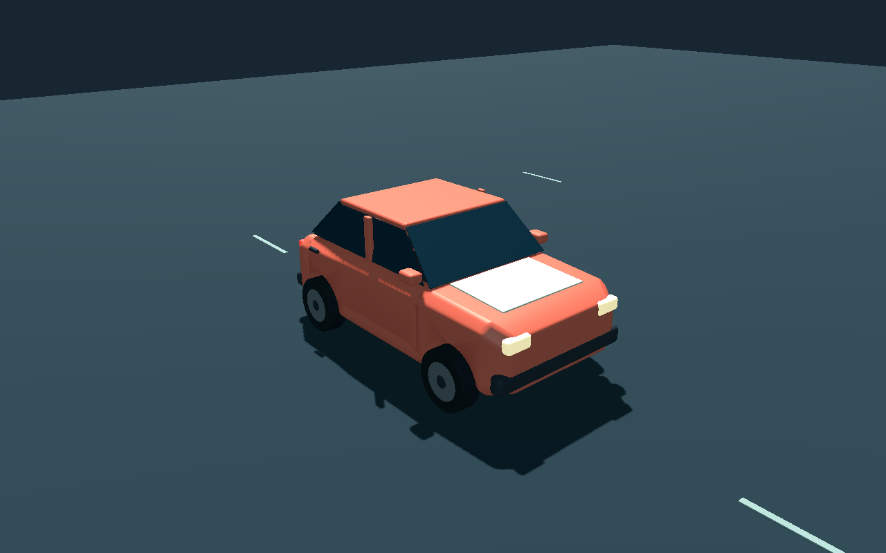
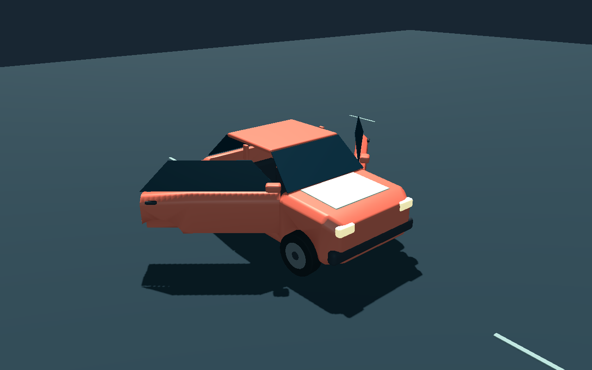
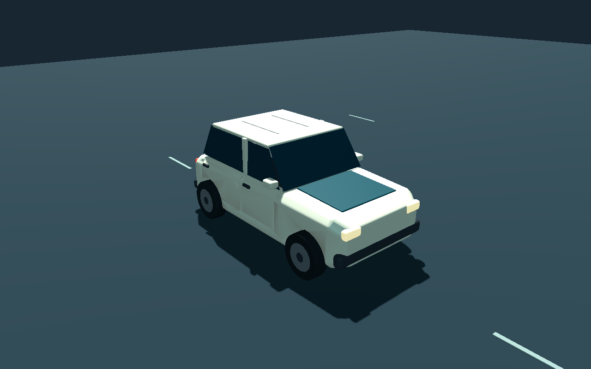
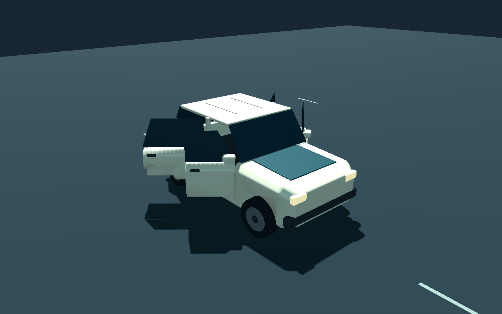
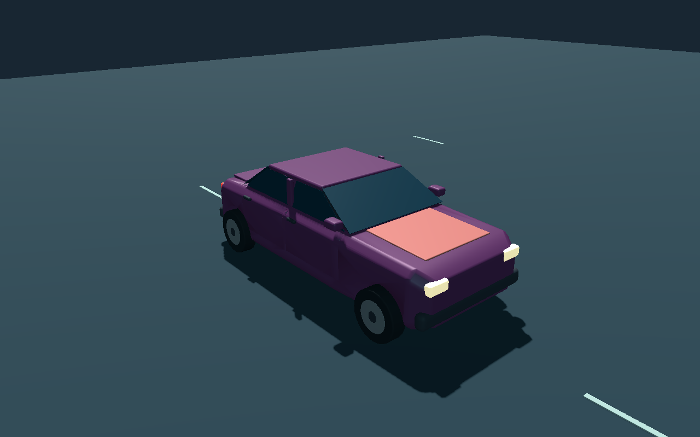
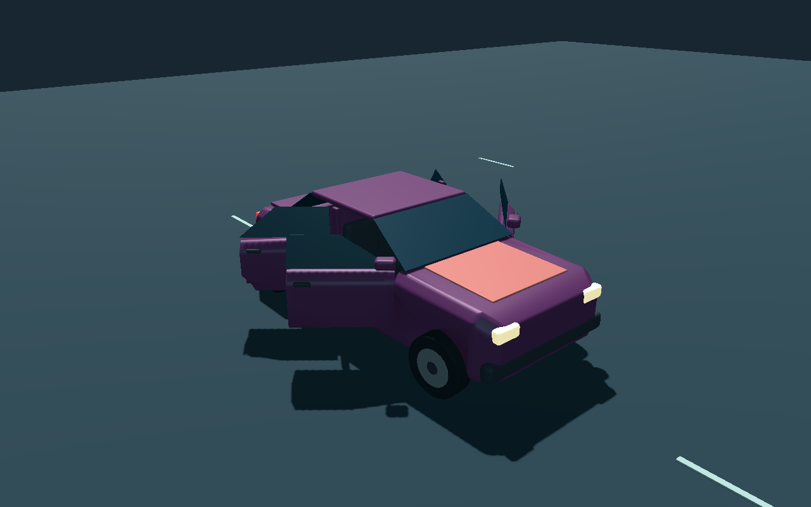

Latch compact
Asset handoff · Native47m /42° game-camera capture





VEHICLE · 9 OCTOBER 2026 · FIRST MODEL CHECKPOINT
Separate Blender sources, GLBs, visual wrappers and saved previews. Four wheel pivots per car; two hinged side doors on Latch, four on Crate and Sable. The six-second mechanical demo exercises wheel spin, steering and door motion.
These are actual Godot Compatibility renders at1280×800. Final art polish, owner model review, gameplay integration and target performance remain pending. Door demonstrations do not establish enter/exit gameplay.
Asset handoff · Native47m /42° game-camera capture


Asset handoff · Native47m /42° game-camera capture


Asset handoff · Native47m /42° game-camera capture

